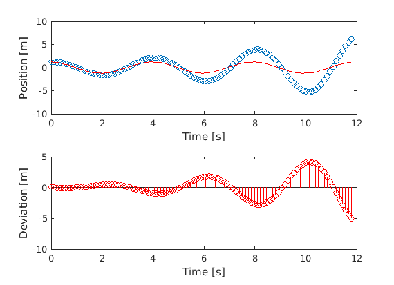

The harmonic oscillator
In classical mechanics, a harmonic oscillator is a system that, when displaced from its equilibrium position, experiences a restoring force, F, proportional to the displacement, x:

where k is a positive constant.
function [] = harmonic_oscillator_1D(nnt) % For the simulation, a number of parameters is initialised: nnt = 100 v0 = 0; % Initial velocity x0 = 1.2; % Initial position k = 2.5; % Spring constant M = 1; % Mass of hydrogen atom t_end = 3 * 2 * pi* 1/sqrt(k/M); % 3 complete periods deltat = t_end/nnt; % Time step pos = zeros(nnt,1); % Position vector vel = zeros(nnt,1); % Velocity vector tim = zeros(nnt,1); % Time vector pos(1) = x0; % Store initial position vel(1) = v0; % Store initial velocity % The time loop for n = 1:nnt-1 pos(n+1) = position(pos(n),vel(n),deltat); newForce = spring_force(k,pos(n)); vel(n+1) = velocity(vel(n),newForce,M,deltat); tim(n+1) = tim(n) + deltat; end % Plot and compare to analytical solution compareToExact(x0,M,k,tim,pos); end function F = spring_force(k,pos) % M: mass of particle F = - k * pos; end function v = velocity(vt,F,M,dt) % vt: velocity at previous time % mass: mass of particle % dt: time step size v = vt + F/M * dt; end function x = position(xt,vel,dt) % xt: position at current time step % vel: velocity at current time step % dt: time step size x = xt + vel * dt; end function compareToExact(x0,M,k,tim,pos) omega = sqrt(k/M); % Exact solution pos_ex = x0 * cos(omega * tim); % Draw comparative figure figure; subplot(2,1,1) plot(tim,pos, 'o'); xlabel('Time [s]'); ylabel('Position [m]'); hold on; plot(tim,pos_ex,'r-') subplot(2,1,2) stem(tim,pos_ex-pos,'r-') xlabel('Time [s]'); ylabel('Deviation [m]'); disp 'The norm of error is: ' norm(pos_ex-pos) end
nnt = 100 The norm of error is: ans = 17.6177